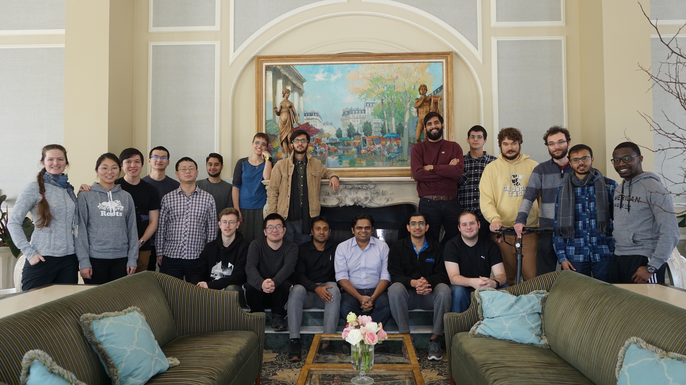

Vision: Invent and Optimize Materials, Processes and Devices to Accelerate the Transition to Sustainable Transportation, Aviation, Chemicals and Fuels.
Our group is involved in several efforts to spur community-building and research dissemination efforts.
Prof. Viswanathan runs the Battery Modeling Webinar Series (BMWS). Find more information here.
Dilip has coordianted a Scientific Machine Learning (SciML) course, consisting of talks along with interactive code demonstrations. For more details and schedule, visit this page.